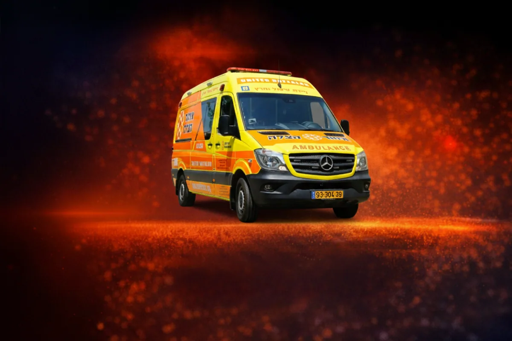
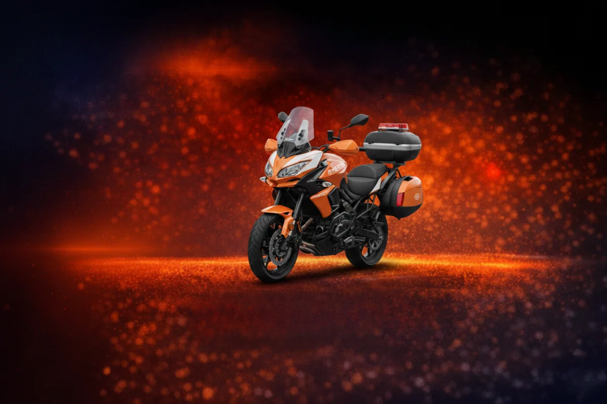
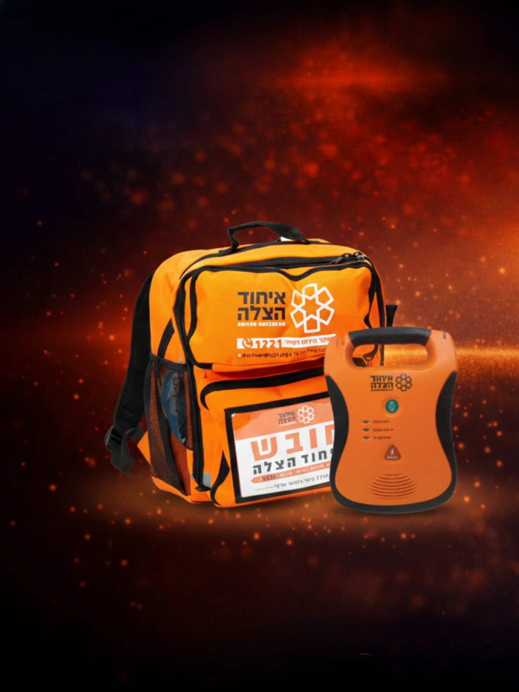
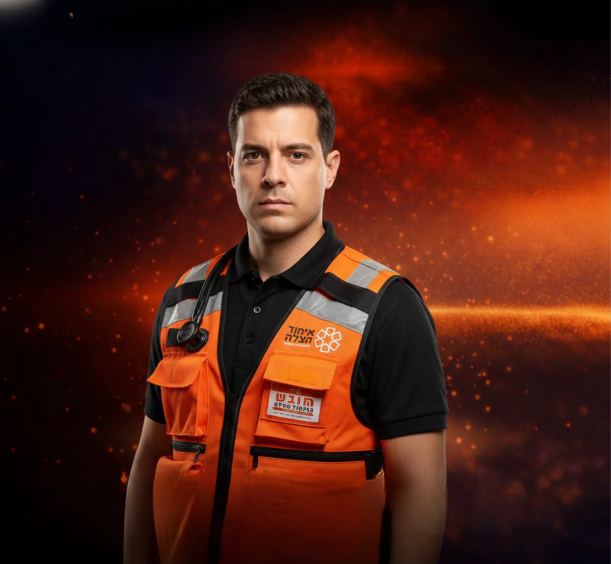
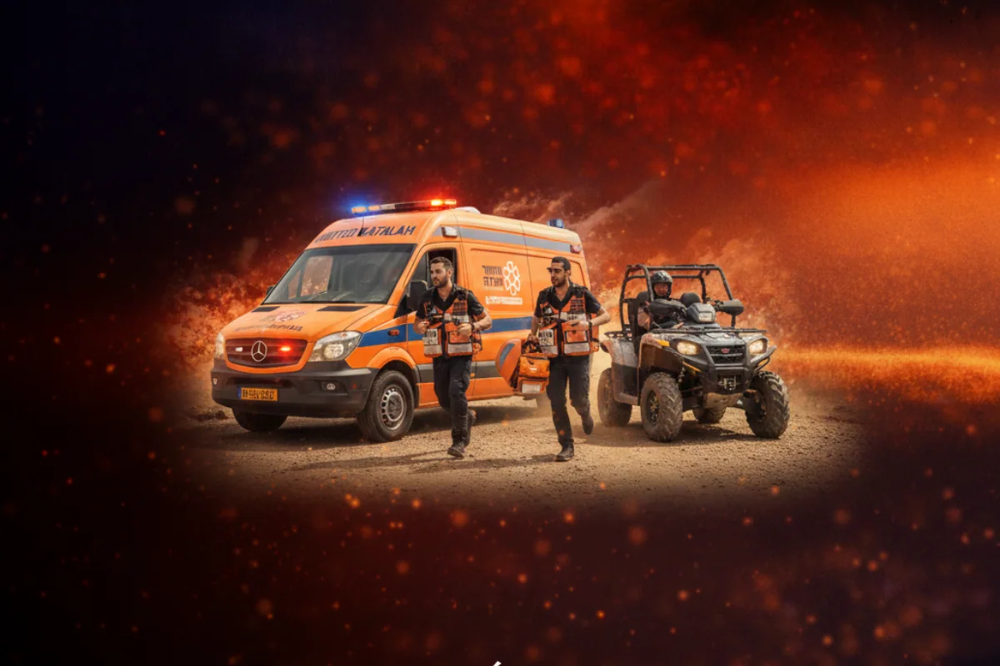

90 sec
pour atteindre les victimes dans les grandes villes et commencer immédiatement les premiers soins.
Lorsqu’une urgence éclate, United Hatzalah peut intervenir vite parce que tout est déjà prêt : des secouristes formés, des véhicules déployés, du matériel embarqué et une organisation conçue pour gagner un temps décisif.
La rapidité de United Hatzalah repose sur une combinaison unique : présence sur le terrain, moyens mobiles, matériel médical embarqué et disponibilité permanente des bénévoles.
pour atteindre les victimes dans les grandes villes et commencer immédiatement les premiers soins.
bénévoles mobilisés et prêts à intervenir à toute heure, partout en Israël.
de disponibilité opérationnelle grâce à un maillage de terrain unique et réactif.
interventions réalisées pour secourir, stabiliser, traiter et sauver des vies.
Véhicules, matériel médical, équipement de terrain et soutien humain : chaque élément permet de réduire les délais d’intervention et d’augmenter les chances de survie.

Véhicule de secours indispensable pour stabiliser, traiter et transporter les blessés. L’ambulance reste l’un des symboles les plus forts de la mission de United Hatzalah.
Soutenir une ambulance
Le moyen le plus rapide pour atteindre la victime dans les zones denses, contourner le trafic et commencer les premiers soins avant l’arrivée des véhicules plus lourds.
Financer une moto
Véhicule médical léger, mobile et opérationnel, permettant aux équipes de rejoindre très rapidement la zone d’intervention avec le matériel nécessaire.
Soutenir ce véhicule
Défibrillateurs, sacs de secours, oxygène, matériel de stabilisation, consommables vitaux : le matériel est la première ligne de réponse sur le terrain.
Équiper une équipe
Soutenir un secouriste, c’est participer à sa formation, à son équipement et à sa capacité à intervenir rapidement lorsqu’une vie est en danger.
Parrainer un secouriste
Associez votre soutien à une journée entière d’interventions et participez au financement d’une mobilisation concrète, continue et salvatrice.
Parrainer une journéeL’intervention rapide n’a de valeur que si les équipes disposent immédiatement du bon matériel, du bon véhicule et des bons moyens de stabilisation. C’est cette combinaison qui permet réellement de sauver des vies.
Les moyens d’intervention de United Hatzalah ne sont pas des équipements abstraits. Ils représentent la possibilité réelle d’agir plus vite, mieux et plus efficacement dans les premières minutes d’une urgence.
Vous pouvez décider d’orienter votre générosité vers un véhicule précis, du matériel médical, la formation d’un secouriste ou une journée entière d’intervention.
Vous pouvez aussi choisir un don libre, pour permettre à United Hatzalah d’affecter les fonds en priorité là où les besoins sont les plus urgents et les plus stratégiques.
Derrière chaque urgence, il y a un besoin concret. Votre soutien permet à United Hatzalah de continuer à intervenir plus vite, plus efficacement et sans attendre.